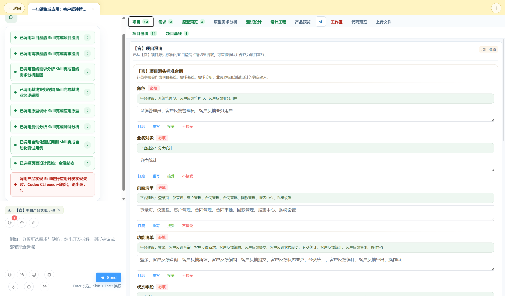
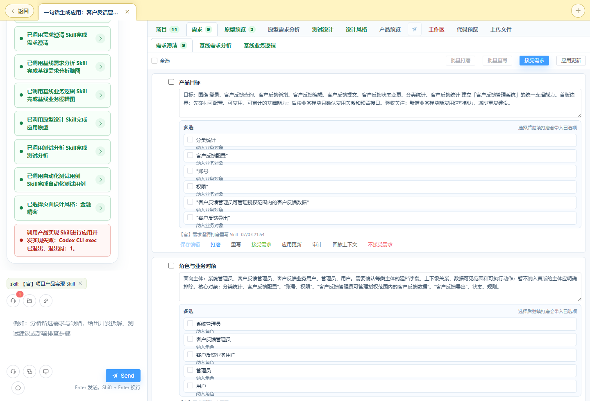
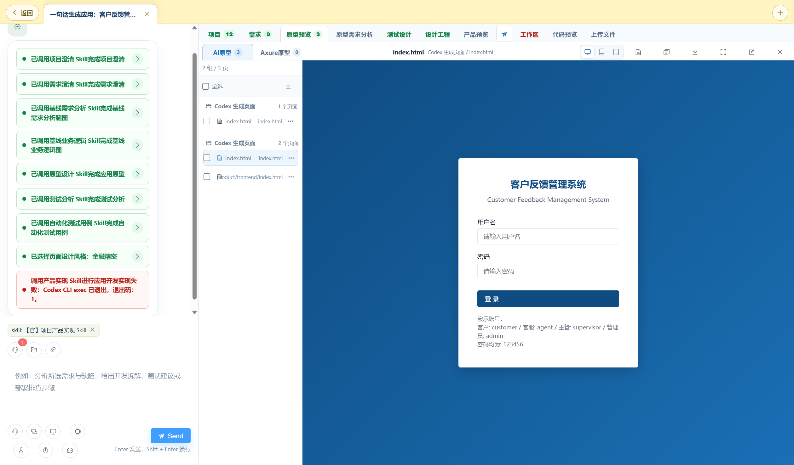
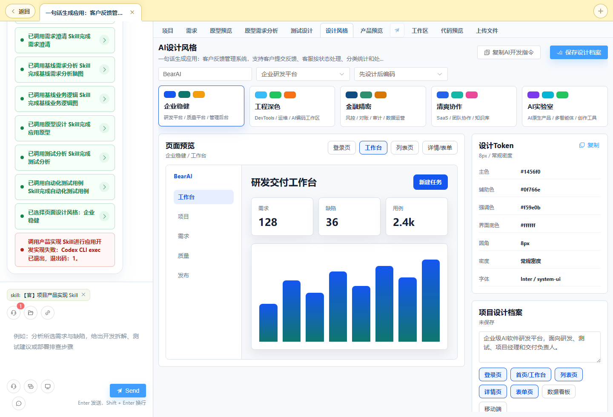

💬
AI 会话开发
以对话为入口，一句话即可驱动项目澄清、需求澄清、业务逻辑、原型、测试到应用生成的全链路研发。
BearAI 是企业级 AI 软件研发平台。以对话为入口，自动串联项目澄清、需求澄清、业务逻辑、原型、测试设计与应用实现， 每一步产物可追溯、可验收、可复用。
从需求到交付、从开发到测试，BearAI 把 AI 能力嵌入软件研发的每一个环节。
以对话为入口，一句话即可驱动项目澄清、需求澄清、业务逻辑、原型、测试到应用生成的全链路研发。
手动用例、步骤、附件、评审工作流；结合 AI 需求分析自动生成测试点与用例草案。
HTTP/WebSocket 接口测试、环境与定时任务，Selenium/Playwright UI 自动化与 AI 智能模式。
解析 PDF/Word/TXT 需求文档，自动拆解业务目标、角色、规则、异常与验收标准。
Prompt / Skill / Agent / Flow / MCP / Tool 六类能力按需挂载，可创建、审核、上架复用。
版本报告分析、缺陷根因归类、迭代复盘，用数据驱动质量改进。
选择「一句话生成应用」，平台自动串联下面每一个阶段，产物层层递进、可追溯。
从一句话、一个用户故事、一份需求或一套原型开始 —— 选对入口，减少澄清成本。
咨询、分析资料、临时调用能力。可手动挂载 Prompt / Skill / Agent / 文件作为上下文。
把一个用户故事拆成角色、目标、规则、异常与验收标准，沉淀为需求基线。
自动串联全链路，从项目澄清一路生成到可运行的产品，中途无需人工干预。
跳过从零发散，直接进入需求澄清确认，再生成脑图、业务逻辑、原型和测试。
从 Axure/HTML 原型解析页面、组件、交互与业务流，再生成需求分析与测试。
手册里有一句话决策指南，帮你快速对号入座。
查看会话类型详解 →每一份产物都沉淀在会话详情页，随时回看、验收与复用。



